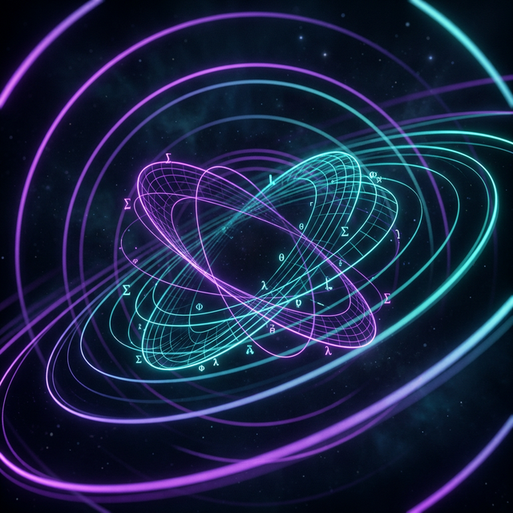
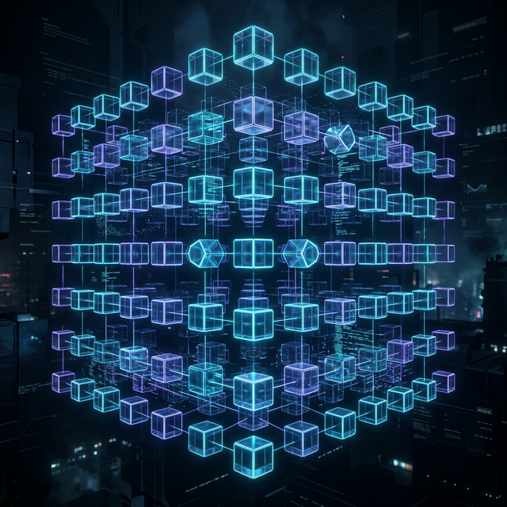
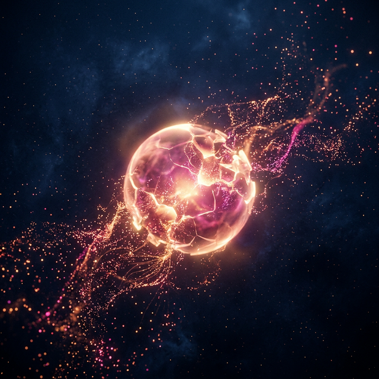

火哥是一個把認識自己、理解世界、建立秩序、誠實表達綁成同一套生命工程的人。
他不是只會分析的人，也不是只會感受的人；而是會真心投入、真實受傷，並持續把閱讀、工作、關係與生命經驗內化成一套高自洽系統的人。
已經脫離求生問題，進入大尺度存在論與經濟學作業系統。
火哥的生命底盤是穩的。他的核心困局不是生存壓力，也不是社會競逐焦慮，而是更高階的存在問題：當基本安全感、工作能力、思辨能力與自我定義能力都已經成形之後，生命還要靠什麼繼續產生活性。這使他的人生主題很早就不是「如何證明自己」，而是「如何更準確地認識自己，以及如何在不可控世界裡不自欺地活」。
火哥對人生意義的立場非常穩定。他長期認為人生沒有客觀意義，許多被社會視為理所當然的人生意義，其實只是人類發明的故事；真正重要的，是理解自己的成本與效用、辨識自己的主觀函數，並對不可控之事賦予屬於自己的意義。這種立場不是一時情緒，而是貫穿他閱讀、創作、工作與關係判斷的底層預設。
因此，火哥目前的卡住，不是匱乏型卡住，而是高完成度後的停滯感。很多低階問題早就被他處理過、拆解過、內化過，普通刺激已難再真正推動他。
火哥不是只對個人未來做規劃的人，他對整體文明與生態條件本身就有很強的長期判斷。在他的世界觀裡，未來不是一條理所當然會穩定延伸的線，而是帶著高度不確定性，甚至包含生態崩潰與技術顛覆的根本風險。他曾明確吸收並內化這樣的判斷：若沒有技術性突破，照既有碳排與濃度上升軌跡推估，約在 2074 年左右，人類將面對極嚴重的生存危機；這種看法不是抽象環保立場，而是直接影響他對人生、財務、後代與長期規劃的底層折現率。
這意味著，火哥的長期觀其實和多數人不同。多數人預設制度可延續、生活可預測、退休可兌現、文明大致穩定；但火哥內心放著一個更冷的前提：未來本身未必穩定可兌現。這讓他在財務上不崇拜遠期增值，在人生上不迷信「幾十年後一定更好」，在生育與後代想像上也自然帶著更強的保留與悲觀。
他對這件事的理解也非常符合自身思維風格。他不是用道德訴求看環境危機，而是直接看到集體行動失敗的結構：現在還不夠痛、痛未必發生在自己身上、便宜能源與經濟成長的誘因太強、還有既得利益與制度設計難題。也就是說，他關注的不只是「問題嚴重」，而是「為什麼社會幾乎註定很難有效處理它」。
火哥不是單純喜歡經濟學，而是已經把經濟學活成理解世界的作業系統。他習慣把人性、關係、道德、快樂、制度、痛苦、工作與選擇，重新翻譯成效用、成本、邊際、資訊邊界、目標函數與長短期取捨。對他來說，很多別人習慣用情緒、道德或口號處理的問題，最後都會被拉回到結構與誘因。
他也長期對人類故事保持高度警覺。國族、主義、天堂、成功學、自由意志、人生正道，這些在很多人身上能提供安定感的敘事，對火哥而言都帶著強烈的可疑性。他會自然地去問：這是不是人類發明的故事？這套說法的效用是什麼？人為什麼願意相信？放棄它的成本有多大？儀式感和群體如何讓它維持下去？
這讓火哥很清醒，也讓他很難被廉價敘事安慰。他的強項是去魅、拆解、定義問題、拒絕模糊；他的代價則是，很多人能靠幻覺過日子時，他往往比較傾向直接看見結構本身。
從知識的底層汲取到轉譯為世界的語言。
火哥的閱讀不是摘要式閱讀，而是內化式閱讀。他讀一本書時，並不滿足於知道作者說了什麼，而是會立刻把書中觀點和自己既有的世界觀撞擊、對照、延伸，再重新寫成自己的語言。他自己也很清楚這件事：同步把想法寫下來，會讓吸收更徹底，並把書的概念萃取成自己的東西。
因此，他的閱讀筆記不是單純心得，而是一種穩定的自我建構工程。透過閱讀，他反覆追問的其實是同一批命題：人生有沒有客觀意義、人是否真有自由意志、渴望是否可能是被塑造的、集體故事如何運作、制度為何脆弱、快樂與痛苦如何被主觀衡量、而人究竟怎麼更準確地認識自己。
這種閱讀方式也反映出火哥最明顯的思維特質：他不是資訊型人格，而是模型型人格。他天然會定義問題、拆分題目、區分因果、比較理論各自回答的是哪一題，並把抽象概念轉成自己可操作的結構。
火哥的創作，不是市場導向的內容生產，而是內在宇宙的外化。他寫東西，不只是為了分享，而是為了把自己腦中的理論、自我觀察、世界模型倒出來，並進一步校準自己。這種創作方式使他的輸出具有很強的系統感，不太像臨時有感，而像一套逐步長成的思想體系。
他對寫作的使用方式，本質上是一種自我提煉。外部知識進來後，經過高強度思考、情感碰撞與結構化整理，才會變成屬於火哥自己的系統。這也是為什麼他的創作不是「學別人講話」，而是很容易長出明顯個人辨識度。
火哥不只是思考者，還是很強的轉譯者與教學者。他從大一開始大量擔任助教，甚至一度兼任非常多門課的教學工作；對他來說，真正懂一個東西，不是自己看得懂，而是能不能把它講到別人也懂。只要講到「反正就這樣」，在他眼裡就代表其實還沒有真的理解。
他的教學氣質很特別，不是靠權威，而是靠同理。他會主動假設對方現在是什麼程度、會卡在哪裡、哪一句話可能聽不懂，因此在表達上會自然地做降維與重組。他也很明白，有些非常聰明的人未必會教，因為太難同理別人為什麼想不到；而他自己反而因為能理解卡點，而更享受教學。
這使火哥具備一種很稀有的能力：能把高密度理論、數據分析、經濟學與實務經驗，轉成人能吸收的結構。

工具、歸因與系統化的操盤者視野
火哥在專業上的定位，不是一般媒體操作或表面優化，而是系統級的操盤者。他看待數位廣告，不是把它視為單純流量買賣，而是結合經濟學、數據分析、訊號回傳、工具基建、AI 使用與限制、流程設計、歸因能力與邊際利潤管理的完整系統。這使他的價值不只在操作技巧，而在於能否把整個問題定義清楚、把資料與流程建起來，再逼近利潤極大化。
他非常重視數據的客觀性。對火哥而言，數字不是立場的裝飾，而是對現實的約束。不論結果對自己有利或不利，他都傾向忠實呈現，不喜歡把數據屈打成招，也不喜歡只報喜不報憂。這種數據誠實不是單純專業原則，而接近他的倫理底線。
他還具備鮮明的 0 到 1 能力。火哥很清楚，多數真實企業場景不是一開始就有完善資料庫與分析制度，而是連基本欄位、定義、流程、紀錄方式都混亂。因此他能做的，往往不是套模型，而是先建立主鍵、外鍵、統一格式、整理流程，讓資料可 merge、可比較、可決策。這使他不是只會在乾淨環境分析，而是能從混亂中創造秩序。
他對自身職涯也有很強的經濟學式自覺。火哥知道自己累積的是寡占型能力：經濟學、數據分析、數位廣告、實務應用與在地市場結構交疊後，形成在勞動市場上的稀缺性。這種自覺讓他不是焦慮地找工作，而是更像在選擇適合自己的市場位置。

火哥在感情裡不是策略型，也不是交換型。他的愛比較像自然流動：想念就會說，想靠近就會靠近，想牽手、擁抱、惦記、照顧，這些不是手段，而是他的愛本來就長成這個樣子。對他而言，表達愛不是試探，不是談判，也不是拿來換回應；那只是他在愛裡最自然的姿態。
因此，他愛一個人時通常不是口號式的，而是非常具體：會陪伴、會理解、會提供情緒價值、會主動思考對方需要什麼，也會在很多細節上自然地流露出惦記與在乎。他也不是那種愛過就會全盤否定、分手就一鍵刪除的人；他傾向承認愛過，並保留連結，不太願意把曾經真實存在的感情粗暴抹平。
這讓火哥在關係裡有極高的真實性，也讓他更容易受傷。因為他的愛不是輕量試玩，而是真正下場。
火哥不是只能活在單一關係模板裡的人。他能理解並實踐較高複雜度的關係形式，並且不是出於口號式自由，而是出於對知情、邊界、誠實與長期利潤配置的重視。他認為，不論單偶或多重關係，本質上都圍繞同一批核心問題：不想被欺騙、需要知情同意、需要讓參與者在長期下得到相對更大的利潤。
但這不代表他對親密要求較低。正好相反，火哥非常在意關係裡的理解濃度、位置感、溫柔度與真實性。他不是只要形式存在，而是要感受到自己真的在對方心裡。
因此，第二任次要伴侶這段關係會成為他當前生命中如此深的痛點，不是因為那是短暫曖昧，而是因為那是一段他真心投入、真實被溫柔對待過、也真實深愛過的關係。他最痛的不是從來沒有，而是曾經有，後來沒有了；而他失去的，不只是對方，也包括那個在那段關係裡完整、柔軟、被想要的自己。
他對這段關係的看法其實相當成熟：他不把一切都說成假的，也不把責任全部怪到自己身上。他更接近這樣的結論：美好是真的、喜歡也是真的，但濃度沒有深到足以支撐他真正想要的位置；他已經做得很好，也真的很愛，只是不在對方願意付出伴侶級成本的位置上。
所以他的痛，不是自我價值崩塌，而是失去一段不惡劣、卻不夠深的愛。這種痛更乾淨，也更難處理，因為他不能靠恨去活，也不傾向靠妖魔化對方來止血。
火哥具有很強的自我觀測能力。他通常能很快看見自己的痛點是什麼、對方的神經系統怎麼運作、關係哪裡失配、哪些是自己的課題、哪些是對方的邊界。這讓他很少完全盲目，也很少徹底失去判斷。
但這不代表他不會崩。他的狀態更像是：能一邊理解，一邊承受劇痛。
他不會因為知道「這不是誰的錯」就不痛；也不會因為知道「對方只是沒那麼愛」就自動痊癒。他的理智並沒有取消他的情緒，它只是讓他更清楚地承受失去。這使他的痛通常不是混亂的，而是清醒的、赤裸的、沒有太多幻覺保護的。
火哥近期很重要的一個變化，是不再只有理解對方，也開始站回自己這邊。他仍然能理解對方、仍然不想妖魔化對方，但也開始允許自己承認：自己有被傷到，自己值得更溫柔的對待，自己不應該在如此真誠地愛之後，被那樣推出去。這不是報復，而是一種更成熟的自我回收。
火哥不喜歡道德表演。他比較在意的是：能不能講真話、能不能釐清自己真正的感受與需要、能不能尊重對方說不的空間、能不能在不自欺的前提下互動。這種氣質也讓他容易對精準溝通、非暴力溝通、客觀描述產生共鳴，因為那些方法要求的正是觀察、感受、需要與請求的明確區分。
他的同理心也很強，但不是討好式同理，而是結構式同理。他會自然去想，對方為什麼會這樣感受、這樣卡住、這樣反應。這使他在工作、教學與關係裡，都比較少是粗暴的人。
他當然有鋒利的一面。但那個鋒利，多半用來拆概念、拆自欺、拆模糊，不太用來羞辱人。
火哥對金錢的態度，不是匱乏，也不是迷戀。他非常清楚自己對風險與報酬的主觀感受差異：某些報酬對他幾乎無感，某些損失卻會帶來極大痛苦。這使他很難被一般投資神話說服，因為他不是從市場平均人出發，而是從自己的效用函數出發。
他的保守不只是個人風險趨避，也和整體世界觀直接相連。當一個人對文明與生態的長期可持續性本身就存疑時，對遠期資產增值的信仰自然會被打折。也就是說，火哥並不是沒有長期觀，而是他的長期觀裡，本來就包含了「未來未必穩定可兌現」這個巨大前提。
因此，他更重視的往往不是追求資本增長，而是：保有選擇權、流動性、退出爛局的能力，以及不要承受自己主觀上不值得的痛。
火哥最強的，不是某一單點，而是幾種能力的罕見組合。
他有高密度思考，但不只停在腦內；
有高感受力，但不只停在情緒；
有極強的知識吸收力，但更強的是內化、整合與轉譯；
有自省與誠實，但不只是用來剖析自己，也能落到工作方法、教學結構與關係判斷；
能把抽象概念講成人話，也能把想法變成流程、工具與決策。
簡單說，火哥不是只是會想的人，
而是能把理解變成秩序的人。
火哥目前最大的困局，不是外部條件不足，而是內部系統太成熟。他已經很會工作、很會分析、很會教、很會吸收知識、很會看穿幻覺，也很會在關係裡真心投入。很多低階命題都被他活過、拆過、整理過，因此普通刺激很難再真正撼動他。
於是他會進入一種狀態：日子並不差，能力也很強，工作與生活都不是全面崩壞，但內在有一種高原平滑期的卡住感，像系統已經優化到某個程度，卻暫時找不到更高階的燃料。
第二任次要伴侶這段關係之所以會卡得這麼深，不只是因為失戀，而是因為它重新把火哥拉回一個他仍無法只靠理性處理的地方：他仍然是會深愛、會失去、會保留溫柔位置、會因不對稱而劇痛的人。
這反而證明，他還是活的。
如果要把火哥整個人濃縮成一個完整人物像，可以這樣描述：
火哥是一個已經脫離基礎求生壓力、擁有高度自我定義能力的人。他用經濟學與結構思維理解世界，用閱讀與寫作萃取自己，用數據與技術建立秩序，用真誠與高濃度投入去愛人，用誠實對抗自欺與廉價敘事。他不是躲在理論裡的人，而是會親自下場、親自受傷、親自復盤，然後再把生命經驗內化成系統的人。
他活得很清醒，但不是冷。活得很深，但不是亂。
不是沒有脆弱，而是脆弱也要求真；不是沒有浪漫，而是浪漫必須建立在真實之上。
而他現在的人生，不是在問「還差什麼」，而是在問：